Space missionsअंतरिक्ष मिशनMisiones espacialesMissões espaciaisMissions spatialesالمهمات الفضائية
Famous moments in the exploration of space, oldest first.अंतरिक्ष की खोज के मशहूर पल, सबसे पुराने से शुरू।
Sputnik 1 · USSR
The first artificial satellite. This metal ball, about the size of a beach ball, circled Earth for about three months. Its beeping could be heard on radios and it started the space age.पहला कृत्रिम उपग्रह। बीच-बॉल जितनी यह धातु की गेंद करीब तीन महीने पृथ्वी का चक्कर लगाती रही। इसकी बीप रेडियो पर सुनी जा सकती थी, और इसी से अंतरिक्ष युग शुरू हुआ।
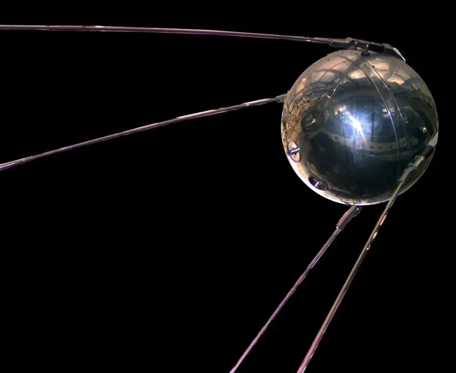
📷 NSSDC, NASA · Public domain
Vostok 1 · USSR
Yuri Gagarin became the first person in space. He circled Earth once, in about 108 minutes.यूरी गागरिन अंतरिक्ष में जाने वाले पहले इंसान बने। उन्होंने करीब 108 मिनट में पृथ्वी का एक चक्कर लगाया।
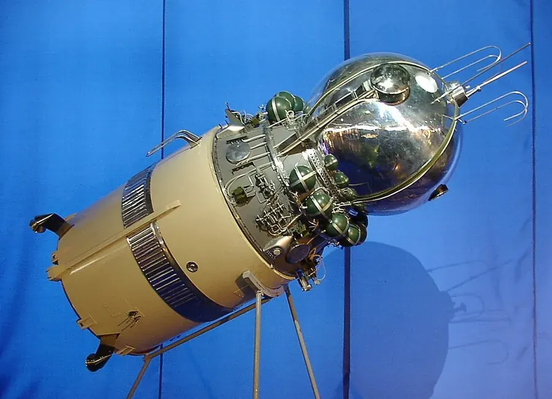
📷 HPH (Wikimedia Commons) · CC BY-SA 3.0
Apollo 11 · NASA
Neil Armstrong and Buzz Aldrin landed in the Sea of Tranquility and became the first people to walk on the Moon. Michael Collins waited for them in orbit.नील आर्मस्ट्रांग और बज़ एल्ड्रिन शांति सागर में उतरे और चाँद पर चलने वाले पहले इंसान बने। माइकल कॉलिन्स कक्षा में उनका इंतज़ार करते रहे।
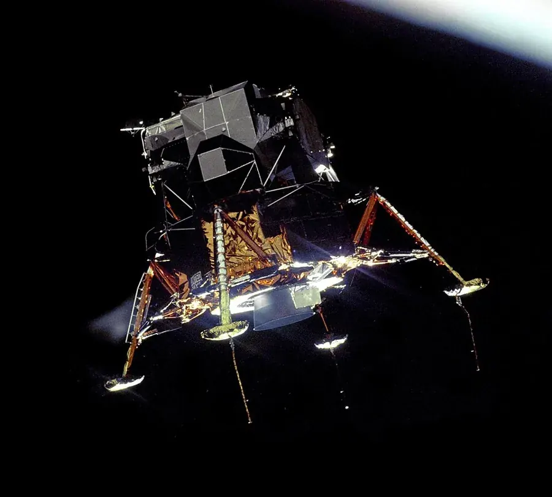
📷 NASA · Public domain
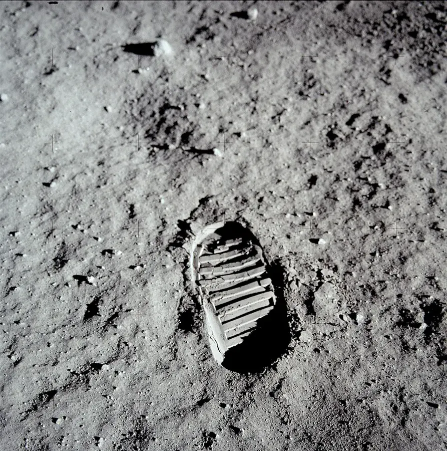
📷 NASA · Public domain
Venera 7 · USSR
The first spacecraft to land on another planet and send a signal back. It sent data from Venus for about 23 minutes in the crushing heat.दूसरे ग्रह पर उतरकर संकेत भेजने वाला पहला यान। उसने शुक्र की कुचल देने वाली गर्मी में करीब 23 मिनट तक डेटा भेजा।
Viking 1 · NASA
It landed on Mars and worked there for more than six years, sending the first long series of photos and weather reports from the surface of another planet.यह मंगल पर उतरा और छह साल से ज़्यादा काम करता रहा। इसने किसी दूसरे ग्रह की सतह से तस्वीरों और मौसम की रिपोर्टों की पहली लंबी श्रृंखला भेजी।
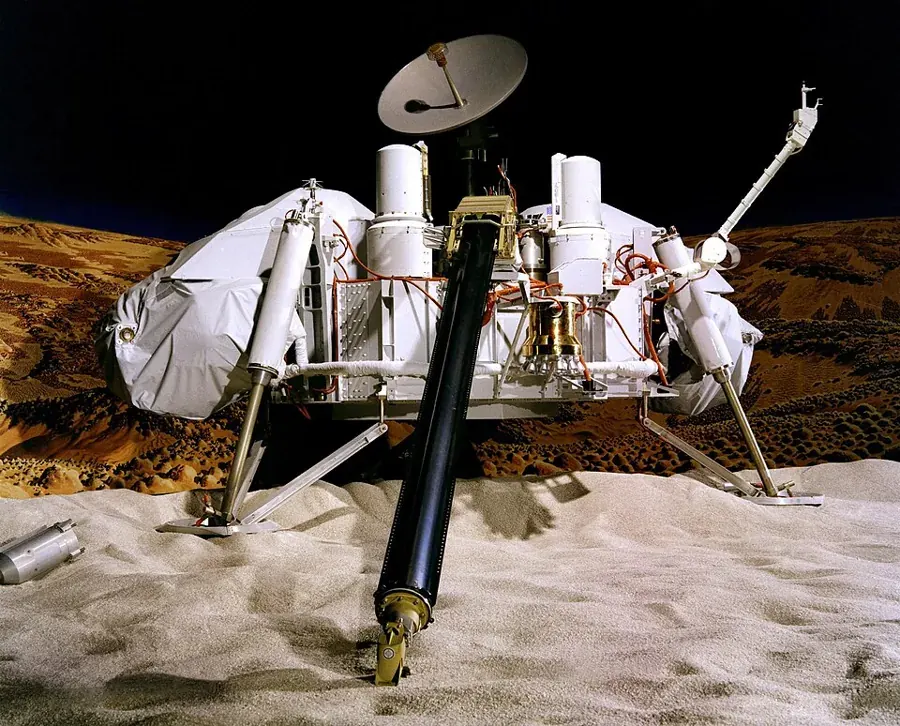
📷 NASA/JPL-Caltech/University of Arizona · Public domain
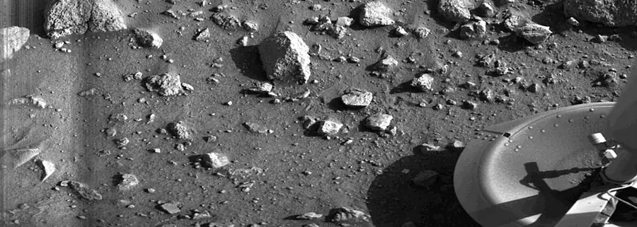
📷 NASA/JPL · Public domain
Voyager 1 · NASA
Launched in 1977, it flew past Jupiter and Saturn and entered interstellar space in 2012. It is the farthest human-made object from Earth.1977 में छोड़ा गया, यह बृहस्पति और शनि के पास से गुज़रा और 2012 में तारों के बीच की जगह में पहुँचा। यह पृथ्वी से सबसे दूर इंसान की बनाई चीज़ है।
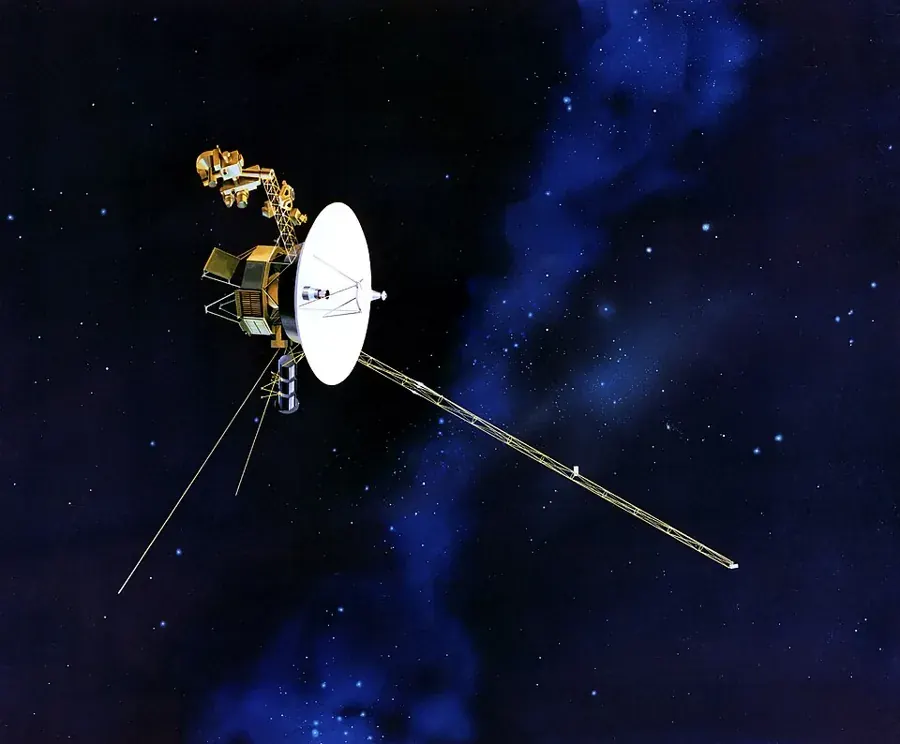
📷 NASA/JPL · Public domain
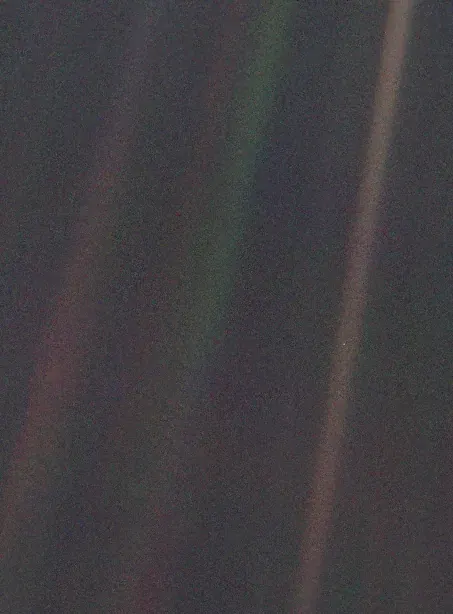
📷 NASA/JPL · Public domain
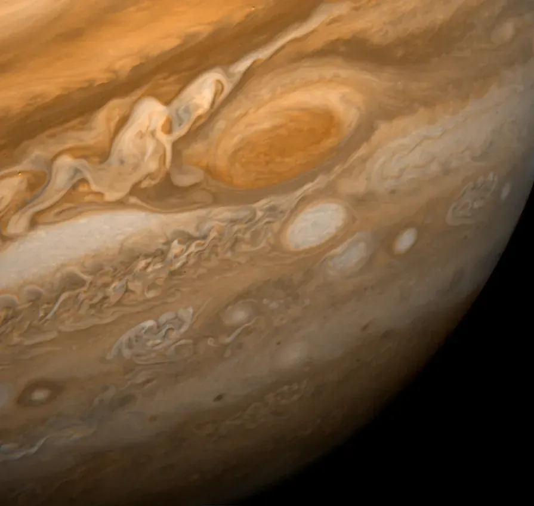
📷 NASA · Public domain
Hubble Space Telescope · NASA / ESA
Launched in 1990, it looks at the universe from above Earth's air. Its sharp pictures helped measure the age of the universe and showed thousands of faraway galaxies.1990 में छोड़ा गया, यह पृथ्वी की हवा के ऊपर से ब्रह्मांड को देखता है। इसकी साफ़ तस्वीरों से ब्रह्मांड की उम्र नापने में मदद मिली और हज़ारों दूर की आकाशगंगाएँ दिखीं।
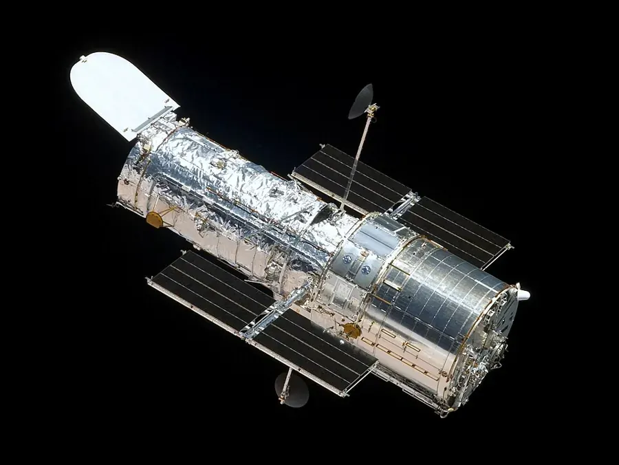
📷 NASA (crew of STS-125) · Public domain

📷 NASA and ESA · Public domain
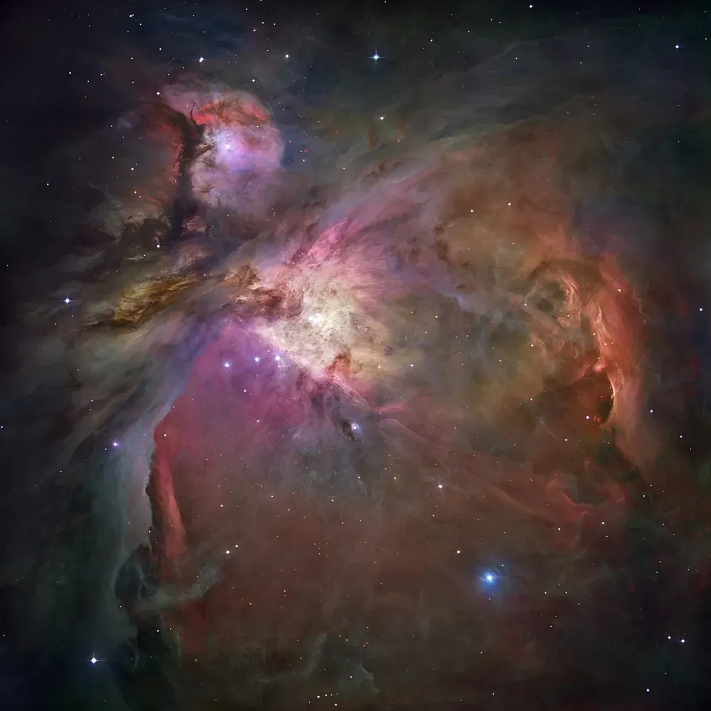
📷 NASA, ESA, M. Robberto and the Hubble Orion Treasury Project Team · Public domain
Cassini–Huygens · NASA / ESA / ASI
Huygens, a probe carried by Cassini, parachuted down to Saturn's moon Titan. It was the first landing in the outer solar system, and it sent pictures from the surface.कैसिनी के साथ गया यान ह्यूजेन्स पैराशूट से शनि के चंद्रमा टाइटन पर उतरा। बाहरी सौरमंडल में यह पहली लैंडिंग थी, और उसने सतह से तस्वीरें भेजीं।
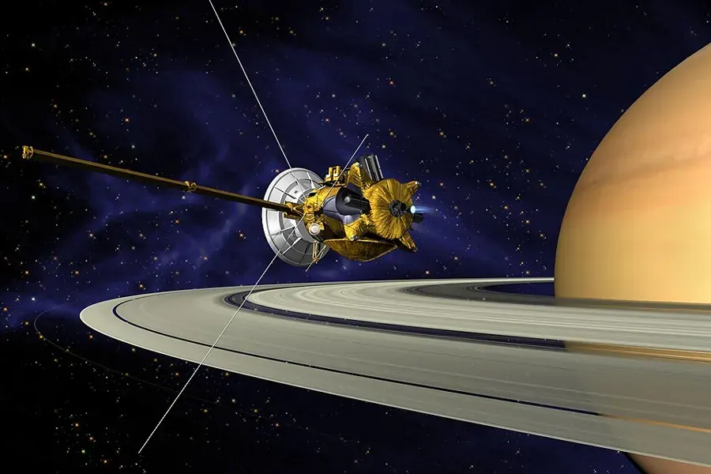
📷 NASA/JPL · Public domain
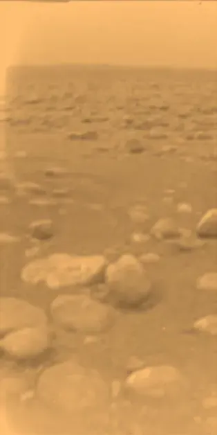
📷 ESA/NASA/JPL/University of Arizona · Public domain
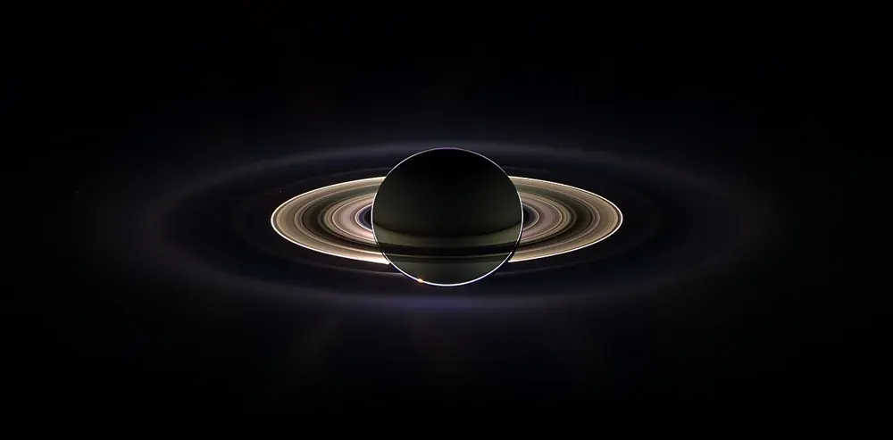
📷 NASA/JPL/Space Science Institute · Public domain
Curiosity · NASA
This car-sized rover landed in Gale Crater using a rocket-powered sky crane. It found that Mars once had the right conditions for life.कार जितना बड़ा यह रोवर रॉकेट से चलने वाली ’स्काई क्रेन’ की मदद से गेल क्रेटर में उतरा। इसने पाया कि मंगल पर कभी जीवन के लायक हालात थे।
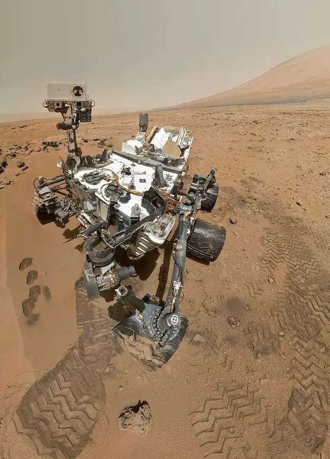
📷 NASA/JPL-Caltech/MSSS · Public domain
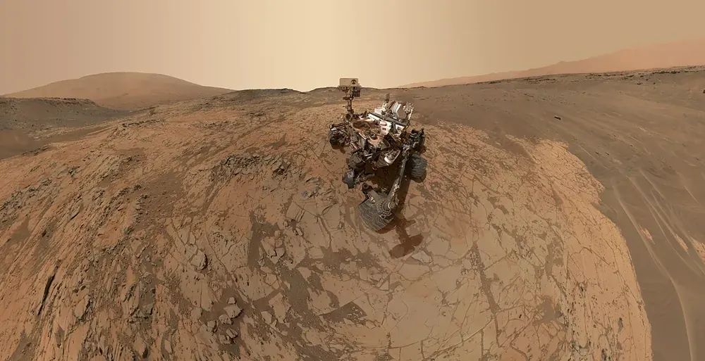
📷 NASA/JPL-Caltech/MSSS · Public domain
Mangalyaan · ISRO
India's Mars Orbiter Mission reached Mars orbit on its first try, a first for any country, and at a very low cost.भारत का मंगल ऑर्बिटर मिशन पहली ही कोशिश में मंगल की कक्षा में पहुँच गया। किसी भी देश के लिए यह पहली बार था, और वह भी बहुत कम खर्च में।
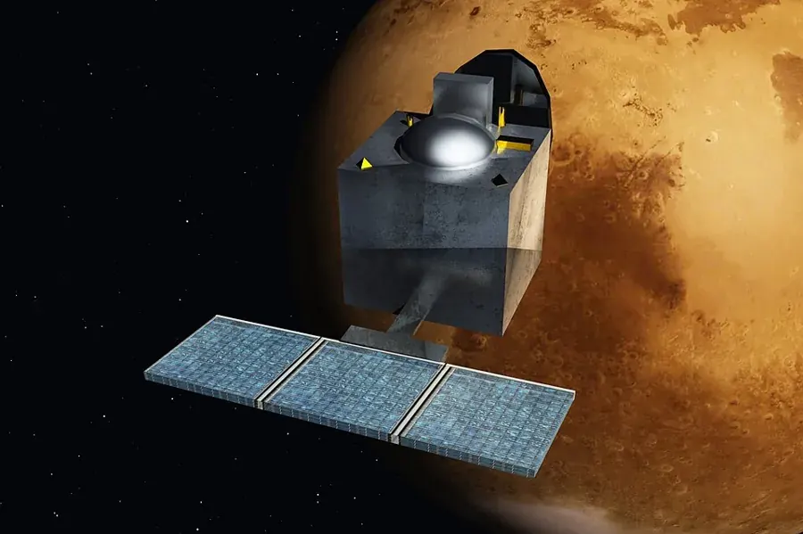
📷 Nesnad (Wikimedia Commons) · CC BY-SA 4.0
Rosetta and Philae · ESA
Rosetta's lander Philae touched down on comet 67P/Churyumov–Gerasimenko, the first landing on a comet. Rosetta itself circled the comet for two years.रोसेटा के लैंडर फ़ाइली ने धूमकेतु 67P/चुर्यूमोव–गेरासिमेंको पर उतरकर धूमकेतु पर पहली लैंडिंग की। रोसेटा खुद दो साल तक धूमकेतु का चक्कर लगाता रहा।
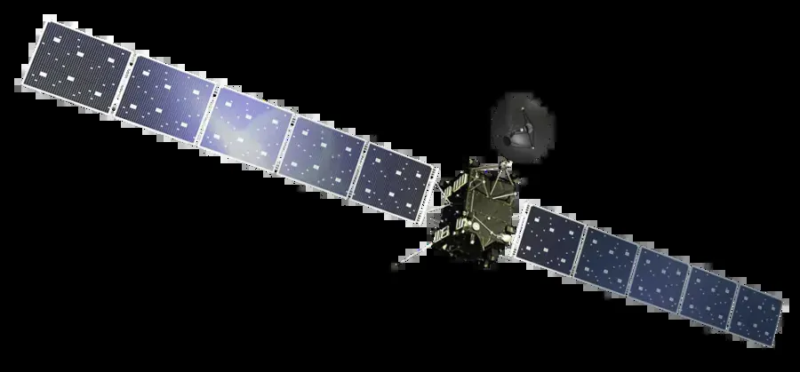
📷 ESA/ATG medialab · CC BY-SA 2.0
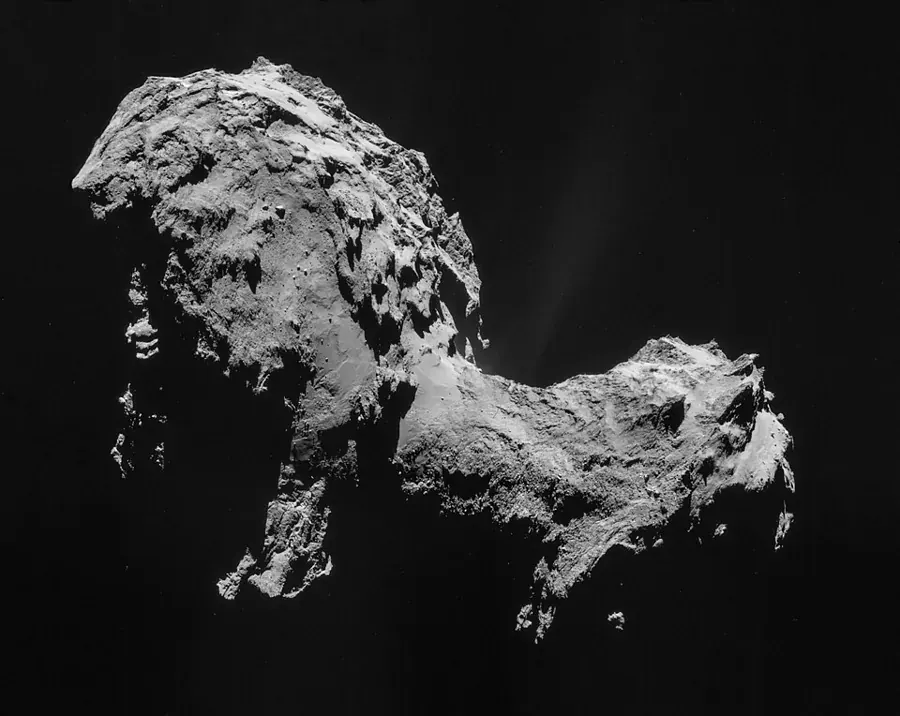
📷 ESA/Rosetta/NAVCAM · CC BY-SA 3.0 igo
New Horizons · NASA
After a nine-year trip, it flew past Pluto and showed us icy mountains and a huge heart-shaped plain for the first time.नौ साल के सफ़र के बाद यह प्लूटो के पास से गुज़रा और पहली बार हमें बर्फ़ीले पहाड़ और दिल के आकार का विशाल मैदान दिखाया।
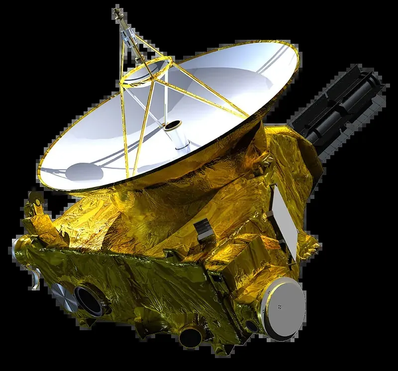
📷 NASA/JHUAPL · Public domain
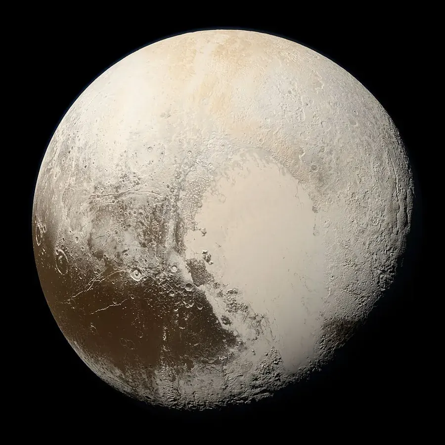
📷 NASA/JHUAPL/SwRI · Public domain
Perseverance and Ingenuity · NASA
The Perseverance rover landed in Jezero Crater to look for signs of old life and collect rock samples. Its helicopter Ingenuity made the first powered flight on another planet.पर्सिवियरेंस रोवर पुराने जीवन के निशान खोजने और चट्टानों के नमूने जमा करने के लिए जेज़ेरो क्रेटर में उतरा। उसके हेलिकॉप्टर इंजेन्युइटी ने किसी दूसरे ग्रह पर पहली संचालित उड़ान भरी।
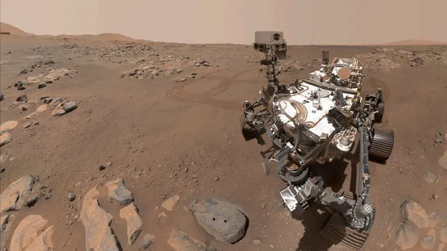
📷 NASA/JPL-Caltech · Public domain
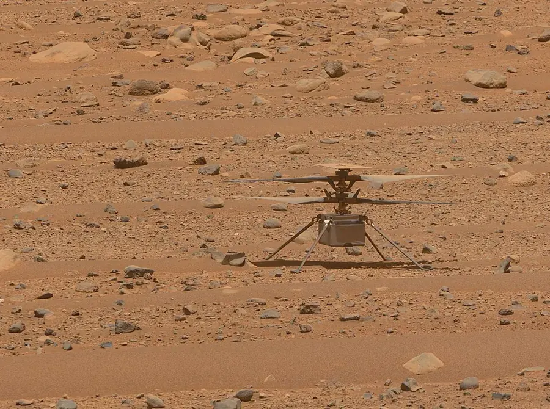
📷 NASA/JPL-Caltech/ASU (processed by Simeon Schmauß) · CC BY 2.0
James Webb Space Telescope · NASA / ESA / CSA
The largest space telescope has a 6.5-metre gold mirror and watches the sky in infrared light from 1.5 million km away. It sees some of the first galaxies.सबसे बड़ी अंतरिक्ष दूरबीन में 6.5 मीटर का सुनहरा शीशा है, और वह 15 लाख किमी दूर से इन्फ्रारेड रोशनी में आसमान देखती है। वह कुछ सबसे पहली आकाशगंगाएँ देख पाती है।
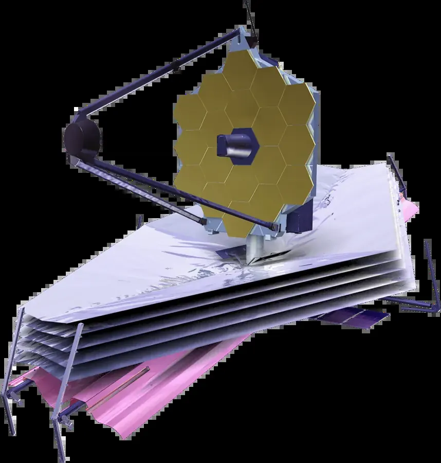
📷 NASA · Public domain

📷 NASA, ESA, CSA and STScI · Public domain

📷 NASA, ESA, CSA and STScI · Public domain
Chandrayaan-3 · ISRO
India became the fourth country to land softly on the Moon, and the first near its south pole. The Vikram lander carried the Pragyan rover.भारत चाँद पर आराम से उतरने वाला चौथा देश बना, और दक्षिणी ध्रुव के पास उतरने वाला पहला। विक्रम लैंडर अपने साथ प्रज्ञान रोवर लेकर गया था।
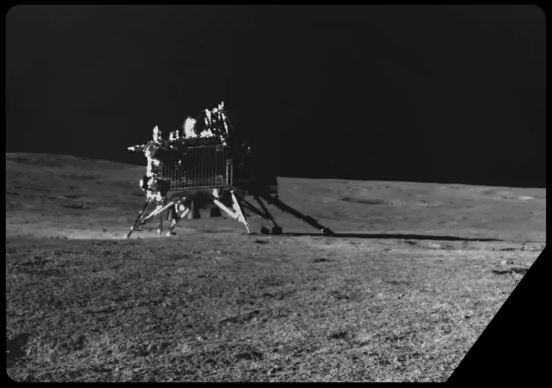
📷 ISRO/Simeon Schmauß · CC BY 2.0
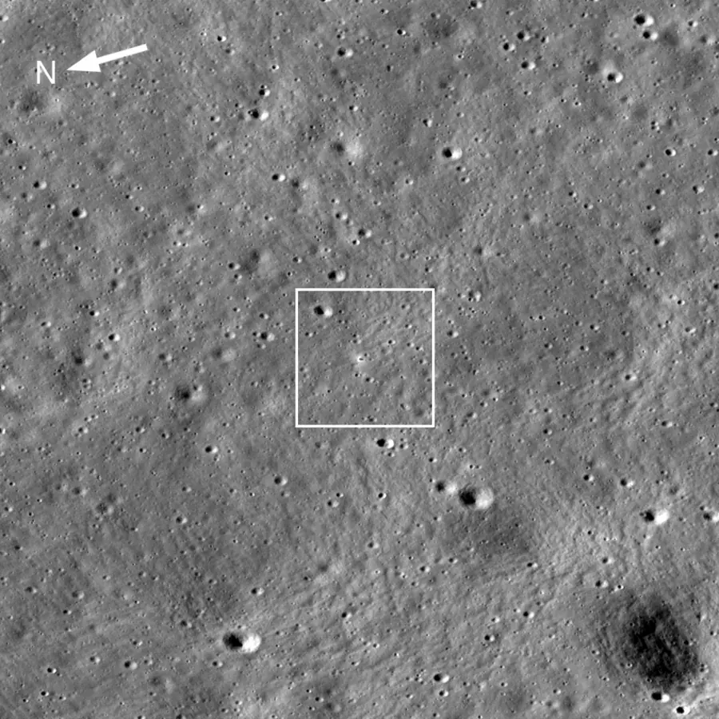
📷 NASA/GSFC/Arizona State University · Public domain
🛰️ Spacecraft nowअंतरिक्ष यान अभीNaves ahoraNaves agoraVaisseaux en ce momentالمركبات الآن